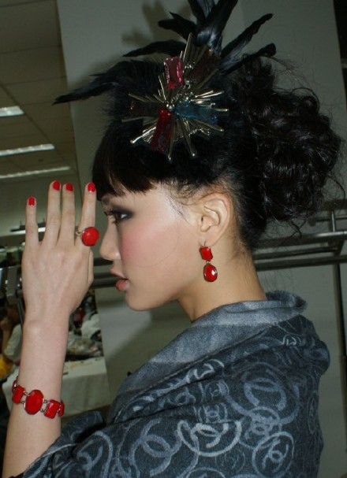

刚从东方卫视的演播厅回来。今天录的是《福特嘉年华-----美好时光》，我唱了夜宴的片尾曲《我用所有报答爱》和小秀了一下弘一法师的唱段《为谁》
想到美好时光这个主题，就想到了很多很多美好的岁月，远的不说，就说刚刚结束的弘一法师，就让我怀念不已。很不争气啊，在最后一场我没有哭，但是在唱《我用所有报答爱》的时候竟然狂哭不止。好吧，想看我流泪出丑的人，可以在这周五的晚上东方卫视看到了。
还有，今天我是一身华丽复古的宫廷装打扮，束腰的黑马甲，黑色的蓬蓬裙，黑色的蕾丝裤袜，一身黑，戴了红色的珊瑚戒指耳环，涂了红色的指甲油。谁让《暮光之城》这么火。

